FPGA Project
RFSoC-based TIQC Control System

True-arb waveform generation capable fully integrated TIQC control SoC. It has 3 cores: Network, Error, and Experiment Processor respectively. All cores are running in baremetal to remove unpredictable behavior of OS. Network Processor manages commands from the host server where TCP server is running with LWIP. It makes interrupt to Experiment Processor to load binary code which is transmitted from the host server or forcibly stop running program. Error Processor monitors all modules in realtime, and record error signals, or override the signal for each module.
AWG


Typical AWG device lacks capability to generate arbitrary waveform for TIQC, since these utilizes only BRAM. To overcome this limitation, AWG utilizing DRAM is implemented. To prevent unpredictable latency due to DRAM refresh, waveform data is aligned to memory row size, and data transaction is scheduled equally.

AWG latency is calculated theoretically, and it is compared with the measured latency. 900 ns WCET latency is measured with 1 channel, and 2.16 us is measured with 8 channels.
Host Server

User select CPP file through IQUIP GUI, and make schedule to run it on the master server. Then, master find highest priority of schedule, and compile the CPP width GNU compiler. Linker script which is written to run on ELF Runner links all user CPP object file and bsp object file. Then, master send ELF file to ELF Runner through TCP Server.
Automatic Vivado Project Generation
 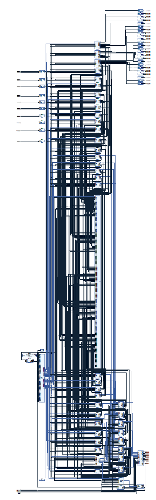
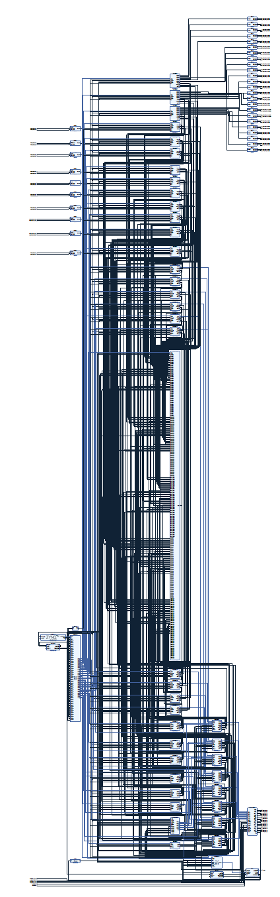
Generate custom IP and connect block diagram automatically based on json meta file Lolenc block diagram is generated by Vivado Project Manager, which includes almost 45 custom IPs.
Ion Trap Two Qubit Gate Pulse Shaping Optimization
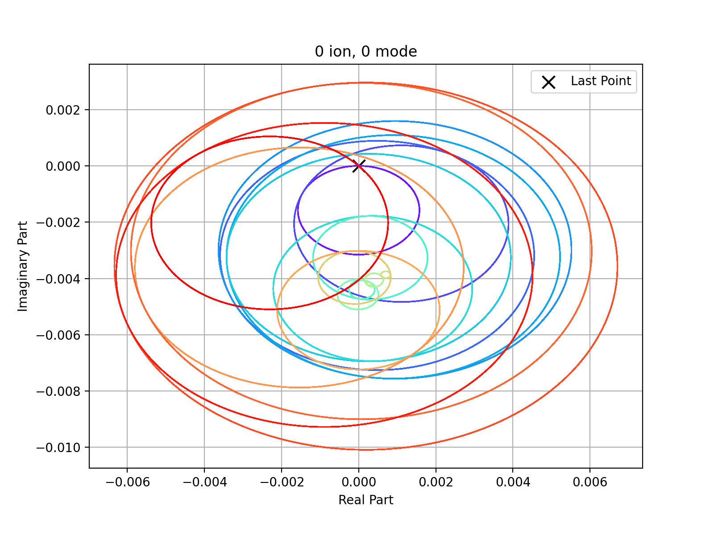Pulse shaping optimization through ADAM algorithm and analysis between experiment data and calculated data
DVI Display & Cameralink Frame Grabber

Image display system with DVI/HDMI for SLM.
 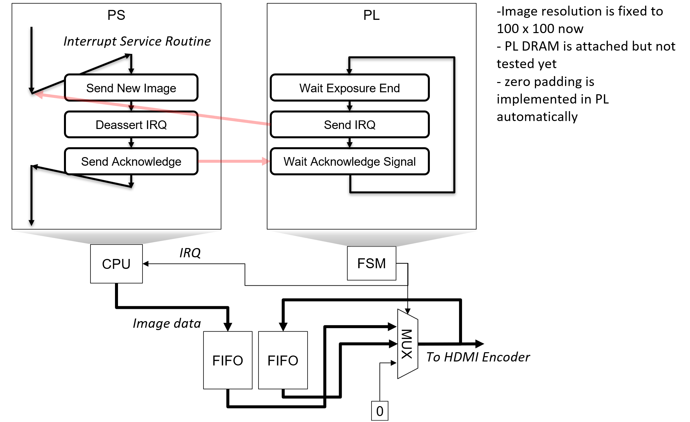
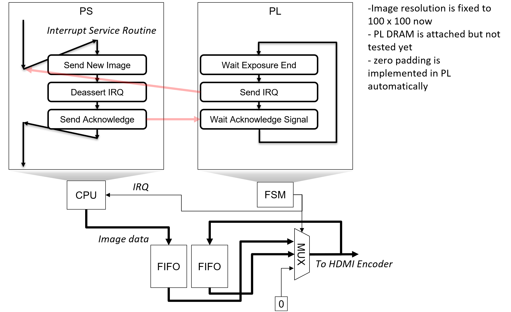
ZCU104 Display System ZCU104 Interrupt System
PCB Project
RF Frontend

Daughter board which transmit RF signal to optical modulator which drive quantum gate for trapped ion. Typical frequency region is 200MHz, and to transform from differential RF signals to single ended, balun is placed.
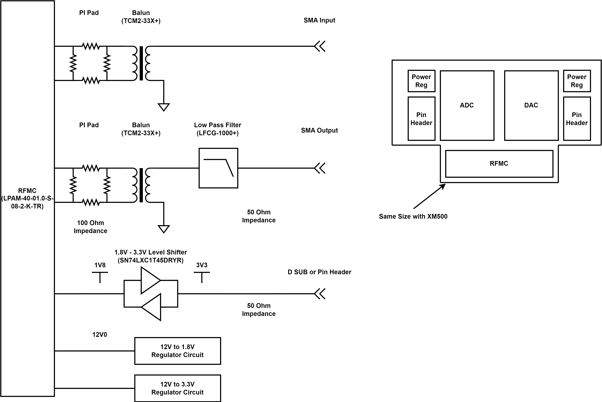PI pad is placed in front of balun to suppress reflection. Power circuit is implemented to generate 1.8V, and 3.3V from 12V.
SI Wave Simulation

To verify schematic and layout, simulation is conducted through ANSYS SIwave. As shown in above figure, cross talk is suppressed under -96dB, and S parameter follows our expectation.

Reflection is suppressed under -20dB at our target frequency.

Crosstalk between the most closest digital trace and RF trace is simulated and shows that it is suppressed under -250dB.
HFSS Simulation

To clarify coplanar waveguide(CPW) to SMA connector transition, HFSS simulation is conducted. 6 different models are simulated, where the SMT connector, through hole connector without pad, and through hole connector with pad with, or without adequate size of throughole are compared.
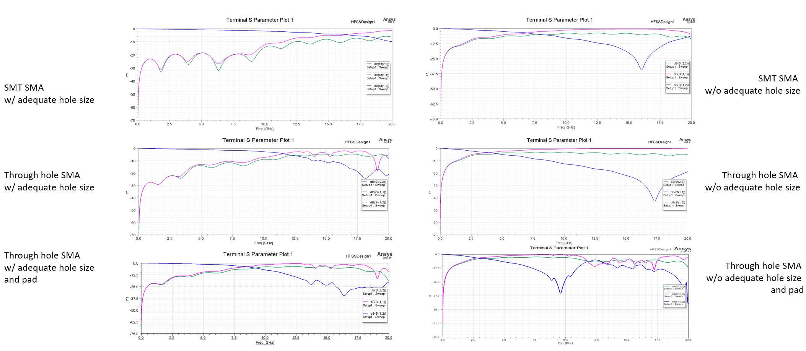The simulation results show that through hole size critically affects the S parameter, and SMT, through hole case does not show big difference at our target frequency.
EMC Consideration
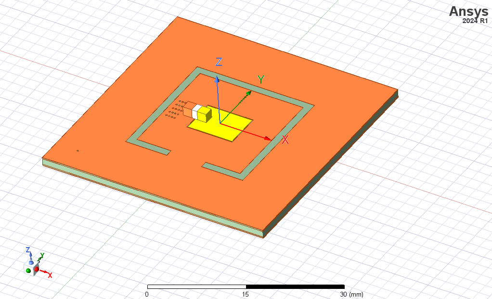To isolate switching noise from power supply, power circuit is implemented on the islanded region. To verify the isolation, HFSS simulation is conducted.

Simulation results show that island structure is effective to isolate the noise. In addition to switching noise suppression, to suppress unwanted EMI to RF signal, RF signals are shielded with ground plane. When the RF signals need to be connected to exposed components, shield can is placed to protect the RF signal.
Low Noise DAC System

In TIQC, ions are shuttled to implement QCCD architecture. Shuttling is implemented by DAC, and to improve fidelity decrease from DAC, it should be designed to be low noise. To remove low, and high frequency noise, DAC system is fully shielded and ground loop is removed.
Overall System

Remove ground loop, and shield DAC from high freuqnecy noise and ESD.
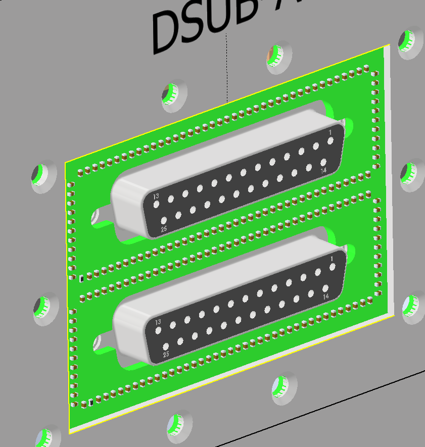Remove ground loop, and shield DAC from high freuqnecy noise and ESD.
Signal Integrity
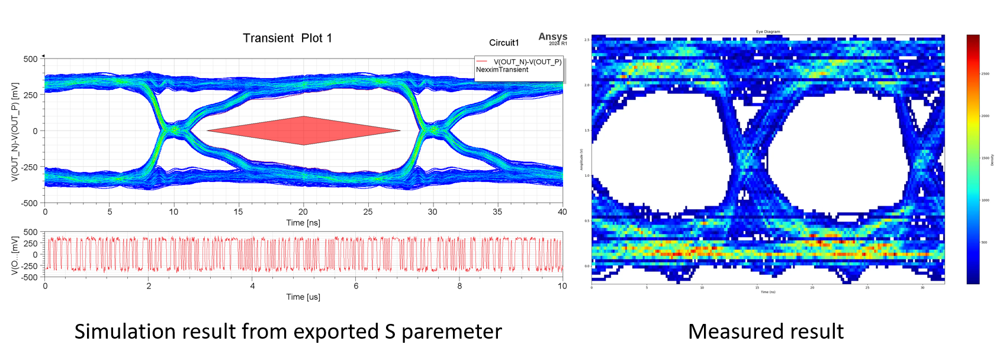Remove ground loop, and shield DAC from high freuqnecy noise and ESD.
High Speed FMC Router

Daughter board which converts FMC(VITA57.1/4) to EEM. The board includes a feature to short the TDI and TDO signals, allowing the FPGA's JTAG chain to remain intact and function properly even when the FPGA is powered on after installation. It is designed to connect to other boards via the EEM interface used in ARTIQ.
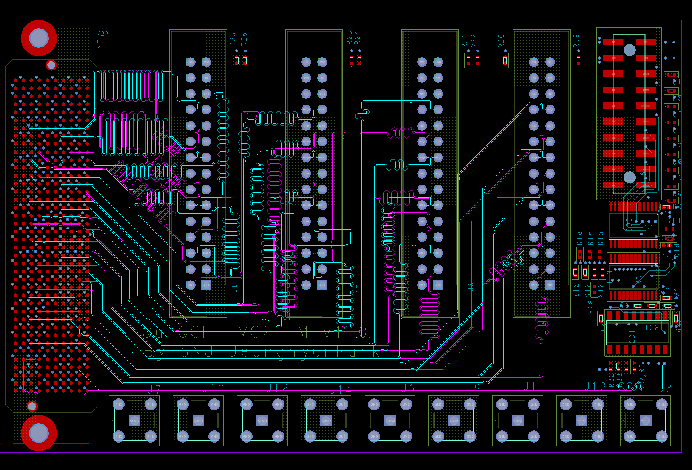The differential signals are routed with a 100-Ohm differential characteristic impedance and are placed between ground layers to minimize external noise interference. All signals have a mismatch of less than 3mm, and the phase delay of the differential signals is also matched.

The eye diagram analysis using ANSYS SIwave confirmed that the system operates without issues at 1 Gbps.
Bidirectional LVDS to TTL
 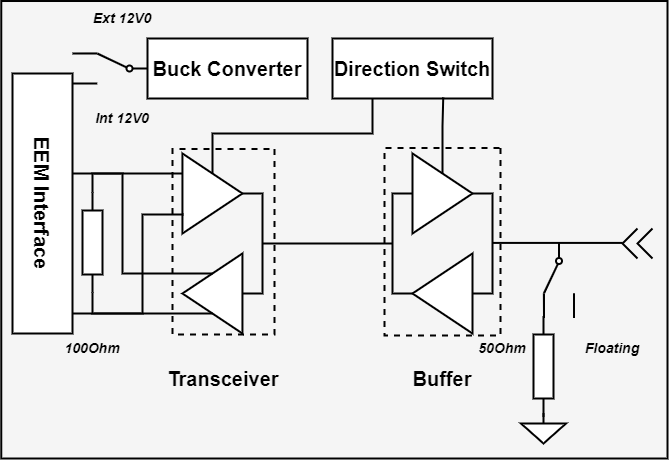
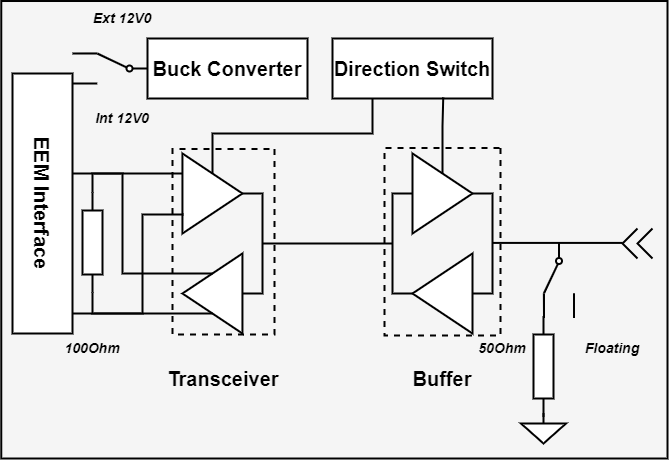

The daughter board converts LVTTL to LVDS signals, with configurable signal direction and 50-Ohm termination using jumpers. Power can be supplied either through the EEM connector or an external power source. A 12V to 3.3V DC-DC converter circuit provides the 3.3V power supply. A buffer is used to drive a 50-Ohm impedance, ensuring the output voltage exceeds 2.0V, which meets the VIH requirements for LVTTL logic levels. The designed PCB serves as a Lolenc TTL driver, capable of controlling electronic devices with a timing resolution of 8 ns.
PMOD to AD9910 PCB board

PCB connecting ArtyS7 FPGA to AD9910 DDS board

The designed PCB serves as a daughter board for the ArtyS7, facilitating a seamless connection with the AD9910 board. As shown in the photo, it is mounted inside an enclosure designed with Autodesk Inventor, where the AD9910 board is secured with 3D-printed structures.